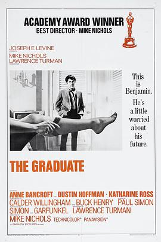
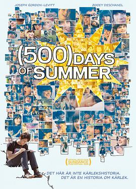

广播
共 65 个月
2293 条广播
其中 1543 条带正文
广播发布后不可编辑，所以每条都是那一刻的原话。
2024-10-28 17:44:02
豆瓣原页
 读过 橘子不是唯一的水果 ★★★★☆
读过 橘子不是唯一的水果 ★★★★☆
开头徐徐道来。（2024, 10, 28，在图书馆里读完了未借出的这本书，喜欢里面童话与故事的讲述。中意“过去顾名思义就是过去。”这句话，也欢喜书里对历史与事实的定义。这几天的一波三折，让我对情感有了新的认识。）
2024-10-20 00:23:27
豆瓣原页
看过 泰迪熊 / Ted ★★★★☆
好玩，合格。
2024-10-19 22:40:38
豆瓣原页
 想读 夜的命名术
想读 夜的命名术
喜欢《从另一边》《蓝》和《黄昏》。反复理解扉页的引语，死亡并不可怕。
2024-10-19 16:14:39
豆瓣原页
在读 橘子不是唯一的水果 ★★★★☆
开头徐徐道来。
2024-10-19 00:56:21
豆瓣原页
看过 共同警备区 / 공동경비구역 JSA ★★★★★
大背景下的小叙事，如此简单如此感人。那芦苇荡上的一阵风就比如是和平的具象。那五个人就是一样的无产阶级，只是意识形态的不同罢了。国家是个历史范畴的概念，大家总会在一起欢笑的。另外，老朴在这里给出了一个很经典的分镜，让人唏嘘又感动。
2024-10-17 14:32:42
豆瓣原页
 想看 天生一对 / The Parent Trap
想看 天生一对 / The Parent Trap
2024-10-17 14:29:08
豆瓣原页
想看 完美的日子 / Perfect Days
2024-10-13 22:04:41
豆瓣原页
 想看 天然子结构 / 天然コケッコー
想看 天然子结构 / 天然コケッコー
夏天看。
2024-10-13 00:54:47
豆瓣原页
看过 末路狂花钱 ★★☆☆☆
又是玩心理的以小博大的影片，无聊。和老哥在推背时候放的一部电影，消遣，没怎么认真看。
2024-10-10 00:07:43
豆瓣原页
 在听 滚石香港黄金十年:莫文蔚精选 ★★★★☆
在听 滚石香港黄金十年:莫文蔚精选 ★★★★☆
2024-10-09 12:58:42
豆瓣原页
 想看 赛德克·巴莱 / 賽德克·巴萊
想看 赛德克·巴莱 / 賽德克·巴萊
2024-10-08 23:24:34
豆瓣原页
 在看 胆大党 / ダンダダン ★★★★★
在看 胆大党 / ダンダダン ★★★★★
开场分镜就疯狂炫技。
2024-10-04 23:31:43
豆瓣原页
看过 志愿军：存亡之战 ★★★★☆
群像戏还是难拍，这样的剧情果然有点脱离实际。
2024-10-04 10:29:01
豆瓣原页
看过 不会拿捏距离的阿波连同学 / 阿波連さんははかれない ★★★☆☆
可爱。（2024, 10, 4，阿b首次制作动画，表现还好吧。）
2024-10-03 10:27:30
豆瓣原页
想看 共同警备区 / 공동경비구역 JSA
2024-09-29 12:39:43
豆瓣原页
 看过 不时用俄语小声说真心话的邻桌艾莉同学 / 時々ボソッとロシア語でデレる隣のアーリャさん ★★★☆☆
看过 不时用俄语小声说真心话的邻桌艾莉同学 / 時々ボソッとロシア語でデレる隣のアーリャさん ★★★☆☆
流水线生产了。（2024, 9, 29，实在看不下去了。）
2024-09-29 12:38:59
豆瓣原页
 看过 败犬女主太多了！ / 負けヒロインが多すぎる！ ★★★★☆
看过 败犬女主太多了！ / 負けヒロインが多すぎる！ ★★★★☆
演出真是十分夏天，有点雨宫哲的意思。开篇一股大老师的味道涌来，但是温水的吐槽的确很好笑。败北女主的一而再再而三估计就是男的拎不清。上田的声音很温柔，虽然寥寥几语，却比蝉声抓耳。（2024, 8, 7，第四集开始的小高潮有点没有由头，莫名其妙地。环境声总是随着一个对话的结束而渐次放大，很有趣。女主的jk属性果然没有雨宫他所刻画的那样灵动，这是的人物是故事的人物，可惜不鲜活。）（2024, 9, 29，完结啦，很好的追番体验，只是最后一集的原创看上去像是单纯地为了发糖而发糖。）
2024-09-28 22:56:01
豆瓣原页
想看 哈利·波特与凤凰社 Harry Potter and the Order of the Phoenix (2007)
2024-09-28 22:53:57
豆瓣原页
 想看 真爱至上 / Love Actually
想看 真爱至上 / Love Actually
2024-09-26 18:55:55
豆瓣原页
看过 僵尸肖恩 / Shaun of the Dead ★★★★☆
两段相似的场景的长镜头拍得很好，只是结尾让人一言难尽。在没有军训的下午里消遣一番。
2024-09-25 23:45:54
豆瓣原页
收藏日记到豆列 理解 在母腹中扮演长大——日本动漫画视野下少年与母亲的关系演绎
2024-09-24 15:16:43
豆瓣原页
关注榜单 豆瓣科幻小说 Top100
2024-09-21 12:02:57
豆瓣原页
想读 望春风
2024-09-21 11:28:41
豆瓣原页
 想看 我在雨中等你 / The Art of Racing in the Rain
想看 我在雨中等你 / The Art of Racing in the Rain
2024-09-21 00:56:59
豆瓣原页
看过 老男孩 / 올드보이 ★★★★☆
好牛逼的影像风格，配乐很雅调，虽然剧情经不起推敲，但是光有血浆与性与禁忌之爱就蛮吸引眼球的。有很多长镜头里推拉横移升降就是一气呵成的感觉，尤其长巷之战情绪调动得十分强烈。我很喜欢这部电影。
2024-09-18 18:18:37
豆瓣原页

想看 毕业生 / The Graduate
2024-09-17 22:35:01
豆瓣原页

看过 和莎莫的500天 / (500) Days of Summer ★★★☆☆
中间那段两个画幅连贯起来教人眼前一亮，只是我到最后也不明白什么是爱情。是夏天变成秋天这样简单么。
2024-09-13 14:54:38
豆瓣原页
想看 老男孩 / 올드보이
2024-09-12 14:53:35
豆瓣原页
想看 和莎莫的500天 / (500) Days of Summer
2024-09-09 00:08:42
豆瓣原页
看过 夜以继日 / 寝ても覚めても ★★★★☆
故事很像《情书》，同样是爱一个模样一样的人，这部电影的镜头调度实在是太棒了，无论是前景中景后景的娴熟切换，还是跟抑或摇，都流畅无比。爱是一个主观的概念，我实在不好评价。
2024-08-30 22:51:55
豆瓣原页
 想看 因果报应 / Maharaja
想看 因果报应 / Maharaja
2024-08-26 09:49:15
豆瓣原页
收藏小组讨论到豆列 理解 从家里两位老人晚年生活看到，我们养老需要准备什么（经济角度）…
2024-08-25 01:44:38
豆瓣原页
 看过 开端 ★★★★☆
看过 开端 ★★★★☆
陪老妈找电视剧偶然翻到的，前几集很抓人，有待进一步观望。（2024, 8, 24，能主动地去写一些基层群众，这很好，但是故事还是很浮躁。白敬亭吃醋蛮好玩的，赵今麦没划精致的妆容，很真实。就是两人的感情线比较冗余。喜欢黄觉的冷漠热情。）（2024, 8, 25，熬夜看完了，结尾有些降智，故意在最后时刻才提出王萌萌下车的真正原因来劝解王夫妇，不过刘丹老师的表演张力真的大，我的情绪不自觉地就被带了起来，不是愤怒不是后悔不是伤心，只是说不清楚。不理解为什么最后一次老张相信了他们两，剧本总的来说漏洞还是不少，但是没怎么影响我的体验，所以我还是想推荐打四星。）
2024-08-24 14:35:26
豆瓣原页
 想看 不成问题的问题
想看 不成问题的问题
2024-08-24 01:14:03
豆瓣原页
在看 开端 ★★★★☆
陪老妈找电视剧偶然翻到的，前几集很抓人，有待进一步观望。
2024-08-23 00:05:23
豆瓣原页
 在读 撒哈拉的故事 ★★★★☆
在读 撒哈拉的故事 ★★★★☆
借的杨青的书，今天终于是看掉了一篇《沙漠中的饭店》。
2024-08-17 21:05:37
豆瓣原页
 看过 放学后失眠的你 / 君は放課後インソムニア ★★★★☆
看过 放学后失眠的你 / 君は放課後インソムニア ★★★★☆
补标，追完了漫画。最后伊咲的漫步很意识流。杂耍蒙太奇的使用让最后成年的中见给了我心脏的一次有力的冲击，十分地震撼。结尾平淡地收场，故事整体上很轻松，就是夜晚的氛围描写得少了。喜欢野野这样单纯的喜欢怪谈的双麻花辫的美术生。
2024-08-17 21:05:15
豆瓣原页
 听过 TV ANIMATION Sonny Boy soundtrack ★★★★★
听过 TV ANIMATION Sonny Boy soundtrack ★★★★★
喜欢《少年少女》和toe的所有歌。
2024-08-17 21:05:04
豆瓣原页
 听过 花儿 ★★★★☆
听过 花儿 ★★★★☆
很punk。
2024-08-17 21:04:42
豆瓣原页
 听过 spiral ★★★★☆
听过 spiral ★★★★☆
2024-08-17 21:04:07
豆瓣原页
 听过 OK ★★★★☆
听过 OK ★★★★☆
喜欢《思念是一种病》。毕业时候放了《再见》。
2024-08-17 21:03:12
豆瓣原页
 看过 狐妖小红娘剧场版：月红篇 ★★★★☆
看过 狐妖小红娘剧场版：月红篇 ★★★★☆
好些年前或许距今过了有八年，我偶然在电视上听到了白月初你彳亍不彳亍的歌，了解到了这部动漫，对幼小的我打开了一个新的世界。
2024-08-17 21:01:52
豆瓣原页
 看过 狐妖小红娘剧场版：王权富贵 ★★★★☆
看过 狐妖小红娘剧场版：王权富贵 ★★★★☆
犹记万水千山。
2024-08-13 23:19:53
豆瓣原页
在看 放学后失眠的你 / 君は放課後インソムニア ★★★★☆
补标，追完了漫画。最后伊咲的漫步很意识流。杂耍蒙太奇的使用让最后成年的中见给了我心脏的一次有力的冲击，十分地震撼。结尾平淡地收场，故事整体上很轻松，就是夜晚的氛围描写得少了。喜欢野野这样单纯的喜欢怪谈的双麻花辫的美术生。
2024-08-12 21:53:37
豆瓣原页
看过 风筝 / カイト ★★★★☆
结尾脚步的留白很有意思。中间两段的战斗的分镜有考究，让人在静止中感到运动。
2024-08-12 15:09:32
豆瓣原页
 读过 我们八月见 ★★★★☆
读过 我们八月见 ★★★★☆
开篇就是很熟悉的马尔克斯式的叙事。（2024, 8, 12，拖了好久才看完，独特的女性视角体现了其对于时代的追求，但还是慢了一步，没了马尔克斯的味道。）
2024-08-11 00:03:00
豆瓣原页
 看过 我的阿勒泰 ★★★★☆
看过 我的阿勒泰 ★★★★☆
空镜真是十分的美，能明显察觉到李娟老师的笔触。灯光终于不扁平了，柔和，开始因地制宜。周依然怎么一点包袱没有，演什么活什么。（2024, 8, 9，感觉结尾有点仓促，还差一集结束。）（2024, 8, 10，最后一集实在大打折扣失去了表达的效果。不好不坏的结局。）
2024-08-04 20:24:21
豆瓣原页
 想读 虚掷的夏日
想读 虚掷的夏日
2024-07-27 23:37:32
豆瓣原页
看过 2008年第29届北京奥运会开幕式 / Beijing 2008 Olympics Games Opening Ceremony ★★★★☆
还好。
2024-07-26 16:21:59
豆瓣原页
 看过 死侍与金刚狼 / Deadpool & Wolverine ★★★★☆
看过 死侍与金刚狼 / Deadpool & Wolverine ★★★★☆
不出意外的话就是年度最佳。除了一部分画面CG涂抹感严重，动作设计上绝对一流。故事依旧死侍不按套路走，就是埃文斯出来的时候我真没想到还能揪出他过去演过的霹雳火出来。一些角色害怕遗忘，于是《死侍》给了他们舞台。
2024-07-26 01:14:42
豆瓣原页
在看 败犬女主太多了！ / 負けヒロインが多すぎる！ ★★★★☆
演出真是十分夏天，有点雨宫哲的意思。开篇一股大老师的味道涌来，但是温水的吐槽的确很好笑。败北女主的一而再再而三估计就是男的拎不清。上田的声音很温柔，虽然寥寥几语，却比蝉声抓耳。
2024-07-18 23:30:36
豆瓣原页
在看 我的阿勒泰 ★★★★★
空镜真是十分的美，能明显察觉到李娟老师的笔触。灯光终于不扁平了，柔和，开始因地制宜。周依然怎么一点包袱没有，演什么活什么。
2024-07-18 23:28:16
豆瓣原页
在看 不时用俄语小声说真心话的邻桌艾莉同学 / 時々ボソッとロシア語でデレる隣のアーリャさん ★★★☆☆
流水线生产了。
2024-07-18 01:22:26
豆瓣原页
看过 不时用俄语小声说真心话的邻桌艾莉同学 / 時々ボソッとロシア語でデレる隣のアーリャさん ★★★☆☆
流水线生产了。
2024-07-16 16:21:55
豆瓣原页
 看过 抓娃娃 ★★★☆☆
看过 抓娃娃 ★★★☆☆
这是骗了情绪，但最后每个人都满足了好敷衍。
2024-07-11 12:26:51
豆瓣原页
在听 spiral ★★★★☆
2024-07-06 23:57:43
豆瓣原页
 看过 哥斯拉大战金刚2：帝国崛起 / Godzilla x Kong: The New Empire ★★★☆☆
看过 哥斯拉大战金刚2：帝国崛起 / Godzilla x Kong: The New Empire ★★★☆☆
幼稚。
2024-07-05 23:58:29
豆瓣原页
 看过 扬名立万 ★★★☆☆
看过 扬名立万 ★★★☆☆
反转又反转，伏笔抓得不错就是太明显了。观感不好看，很平。
2024-07-03 19:36:54
豆瓣原页
在读 我们八月见 ★★★★☆
开篇就是很熟悉的马尔克斯式的叙事。
2024-07-03 19:26:26
豆瓣原页
 看过 射雕英雄传之东成西就 / 射鵰英雄傳之東成西就 ★★★★☆
看过 射雕英雄传之东成西就 / 射鵰英雄傳之東成西就 ★★★★☆
二十七天能拍出这么完整的电影，刘镇伟真厉害。
2024-07-01 23:04:42
豆瓣原页
 看过 朝云暮雨 ★★★★☆
看过 朝云暮雨 ★★★★☆
合格的作品，镜头语言很有意思，像是有意地寻求某种静态，范叔演得永远像个乐呵呵的老头，周冬雨则给我不小的震撼，演得十分生动，算是放下了长衫，尤其值得鼓励。可是故事上，无论节奏还是腔调都很生涩，拖住了演绎的效果，很可惜，却也能观看，只是观感不好。
2024-07-01 23:04:39
豆瓣原页
看过 朝云暮雨
合格的作品，镜头语言很有意思，像是有意地寻求某种静态，范叔演得永远像个乐呵呵的老头，周冬雨则给我不小的震撼，演得十分生动，算是放下了长衫，尤其值得鼓励。可是故事上，无论节奏还是腔调都很生涩，拖住了演绎的效果，很可惜，却也能观看，只是观感不好。
2024-07-01 00:00:30
豆瓣原页
想看 奏鸣曲 ソナチネ (1993)